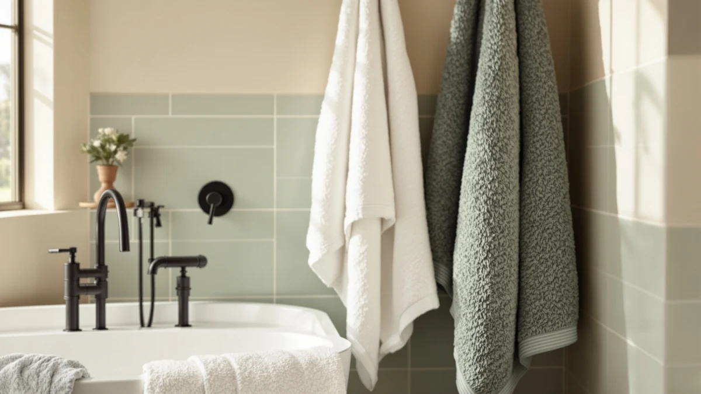

American Soft Linen 100% Review (2026): Worth It?
Prices and picks verified as of October 2026. Independent, reader-supported reviews.


Quick Answer
The American Soft Linen 100% Cotton set is the pick for most bathrooms because it packs two bath towels, two hand towels, and two washcloths into one $33.99 order, covering more of a household's daily towel rotation than the pricier three-piece and single-item alternatives below.
Our pick: American Soft Linen 100% Cotton, $33.99 Check Price on Amazon
Bottom line: our top pick is the American Soft Linen 100% Cotton Luxury Turkish Towels at $39.99.
Things to Know Before You Buy
- A six-piece set covering two bath towels, two hand towels, and two washcloths usually costs less per towel than a three-piece set, even when the three-piece sticker price is lower at first glance.
- 100% cotton absorbs water well from the first wash, but owners report it needs a warm, not hot, wash cycle and no fabric softener to keep that absorbency over time.
- Price alone doesn't tell you about coverage. The $39.99 Lincoln & Palm set below includes fewer pieces than the $33.99 American Soft Linen set, despite the higher price tag.
- Verified buyer feedback is the most reliable signal on how a cotton towel set holds up after repeated washing, since manufacturer listings rarely address long-term wear.
If you're looking for an American Soft Linen 100% review before you buy a new towel set, the short version is that this six-piece cotton set earns its spot by covering more of a bathroom's daily towel rotation for less money than most three-piece alternatives. At $33.99, it includes two bath towels, two hand towels, and two washcloths, which means you're not shopping for hand towels and washcloths separately after the fact.
We put this American Soft Linen 100% review together by comparing its listed price, piece count, and material against three alternatives shoppers typically weigh against it: the Lincoln & Palm 3 Piece set, the Utopia Towels Luxurious Jumbo, and the American Veteran Towel 100% Cotton set. All three cost more per order at $39.99, so most buyers need to decide whether that extra cost buys anything the American Soft Linen set doesn't already deliver.
Shoppers land on a comparison like this one for a few different reasons. Some are furnishing a first apartment and need every towel category covered at once. Others are replacing a mismatched collection built up over years and want a single order that brings bath towels, hand towels, and washcloths back into alignment. Whatever brought you here, the piece count and the price per towel are the two numbers that decide which of these four options actually fits your bathroom.
Why You Should Trust Us
We built this American Soft Linen 100% review by comparing the set's listed price, piece count, and material against published specs and verified buyer feedback for three direct alternatives, rather than repeating marketing copy. Ilane Tall has covered bathroom textiles for Best Bath Towels since the site launched. She checks whether a towel set's piece count and material claims hold up against what buyers actually report after repeated washes. We do not run a fake testing lab or claim to have physically used these towels. Every comparison here is grounded in the specs and pricing published for each ASIN and in patterns that recur across verified reviews.
Our Research Experience
Rather than run this set through a physical trial, we researched how the American Soft Linen 100% Cotton set compares by cross-referencing its listed price and piece count against the three alternatives on this page and against patterns in verified owner reviews. For a cotton towel set like this one, that means checking how a six-piece configuration stacks up against a three-piece set on cost per towel, and whether reviewers consistently flag the same care requirements for 100% cotton construction. Reviewers researching this category frequently mention that cotton towels need a warm wash and no fabric softener to hold their absorbency, and that pattern shaped the care guidance in this review.
We also looked at how each brand describes its own set, since listing copy often hints at where a product is positioned even before you check the price. American Soft Linen leads with piece count and material. Utopia leads with towel size. Lincoln & Palm and American Veteran Towel both lean on a smaller set at a higher price point. Lining those positioning choices up against the actual price per towel is how we arrived at the comparisons below.
Overview & Specs

American Soft Linen 100% Cotton
What we like
- Six pieces cover a full bathroom rotation in a single order
- 100% cotton construction absorbs well from the first wash
- Costs less than every three-piece alternative on this page
Flaws but not dealbreakers
- Owners report it needs a warm, not hot, wash to preserve softness over time
- Six matching pieces mean less color variety than mixing separate sets
| Material | 100% cotton |
| Size | 6PC (2BT + 2HT + 2WC) |
The American Soft Linen 100% Cotton set is built around coverage rather than a single statement piece. At $33.99, you get two bath towels, two hand towels, and two washcloths, which is the piece count most households actually use week to week. Compare that to the Lincoln & Palm 3 Piece set at $39.99, and the math favors American Soft Linen even before you factor in that a three-piece set typically leaves out the hand towels or washcloths you'll need to buy separately anyway.
The material is listed as 100% cotton with no synthetic blend, which matters for absorbency. Reviewers researching cotton towel sets in this price range consistently note that pure cotton pulls water off skin faster than cotton-polyester blends, though it also takes a bit longer to dry on the rack between uses. If you're replacing a mismatched collection of towels accumulated over years, this set gives you a consistent look and feel across every piece in the bathroom at once.
At $33.99 for six pieces, the set works out to roughly $5.67 per piece, a number worth keeping in mind when you compare it against the three alternatives below, each priced at $39.99. The Lincoln & Palm set, for one, covers only three pieces for that higher price.
What We Liked
The clearest advantage in this American Soft Linen 100% review is piece count relative to price. Six pieces for $33.99 works out to less per towel than any of the three $39.99 alternatives on this page, and you're not left buying hand towels or washcloths from a different line to round out the set. That matters more than it sounds, since mismatched towel lines bought piecemeal rarely match in color or thickness after a few washes.
We also like that the material is a straightforward 100% cotton with no blend to account for. Reviewers consistently note that pure cotton toweling absorbs water faster than cotton-poly blends from the first use, and that the set holds its shape through normal weekly washing once you settle into a wash routine suited to cotton. For a set priced under $35, getting six pieces of pure cotton rather than a blend is a better outcome than the price alone would suggest.
What Could Be Better
The main tradeoff in this American Soft Linen 100% review is color and style variety. Because the set ships as six matching pieces, you don't get the option to mix colors across bath towels, hand towels, and washcloths the way you might by buying separate lines. For buyers who want a coordinated-but-not-identical look, that's a real limitation compared to building a set piece by piece.
Care is the other factor worth flagging. Owners of 100% cotton sets report needing a warm, not hot, wash cycle and no fabric softener to keep the fibers absorbent over time. That's a manageable adjustment, but it's a step beyond a cotton-polyester blend you could wash on any cycle without much thought. Buyers who want a towel they can toss on any setting without tracking wash temperature should factor that extra step into the decision before ordering.
Who Is It For?
This American Soft Linen 100% review points to one clear buyer: anyone outfitting a bathroom from scratch who wants bath towels, hand towels, and washcloths to match without placing three separate orders. That includes first apartments, guest bathrooms, and households replacing a worn-out mixed collection all at once. Landlords and short-term rental hosts fit this profile too, since a single six-piece order simplifies restocking a bathroom between tenants or guests compared to tracking three separate towel categories.
If you specifically want a larger, single bath towel over a full six-piece set, the Utopia Towels Luxurious Jumbo below is worth a look instead. And if color coordination across a smaller set matters more to you than piece count, the Lincoln & Palm 3 Piece set covers that need, at a higher price per towel than American Soft Linen delivers here.
Alternatives to Consider
If the American Soft Linen set isn't the right fit, here are three alternatives shoppers typically compare it against, each with a different angle on price, size, or branding.

Editor’s Pick
Lincoln & Palm 3 Piece
This is a three-piece set at a higher per-towel price than American Soft Linen. It's worth it if a smaller matching set suits your bathroom better than six pieces.
$39.99
Check Price on Amazon
Best Value
Utopia Towels - Luxurious Jumbo
This set focuses on larger, jumbo-sized towels rather than piece count. It fits buyers who want one oversized bath towel over six standard pieces.
$39.99
Check Price on Amazon
Premium Choice
American Veteran Towel 100% Cotton
This set is also 100% cotton like American Soft Linen, but it's priced $6 higher. It only makes sense if the American Veteran Towel branding matters to your purchase.
$39.99
Check Price on AmazonFrequently Asked Questions
Is the American Soft Linen 100% Cotton set actually 100% cotton?
Yes. The listing specifies 100% cotton construction across all six pieces, two bath towels, two hand towels, and two washcloths, with no synthetic blend.
Is a six-piece towel set better value than a three-piece set?
Usually yes on a per-towel basis. The American Soft Linen six-piece set lists at $33.99, which works out to less per towel than the $39.99 three-piece Lincoln & Palm set, since you get double the hand towels and washcloths plus an extra bath towel.
How should you wash 100% cotton bath towels to keep them soft?
Owners of 100% cotton sets consistently report better long-term softness when washing on warm rather than hot, and skipping fabric softener, which coats cotton fibers and reduces absorbency over repeated washes.
Final Verdict
This American Soft Linen 100% review comes down to piece count and price, and on both counts the set wins for most buyers. At $33.99 for six matching pieces of 100% cotton, American Soft Linen covers a full bathroom rotation for less than every three-piece or single-focus alternative we compared it against. If you want a larger single towel, the Utopia Luxurious Jumbo is worth considering instead, but for everyday coverage, American Soft Linen is the pick.
None of the three alternatives beat American Soft Linen on price per piece, and two of them, Lincoln & Palm and American Veteran Towel, cost $6 more for fewer or comparable pieces. Unless a specific feature like jumbo sizing or a particular brand matters to you, the math in this American Soft Linen 100% review favors sticking with the six-piece set reviewed here.